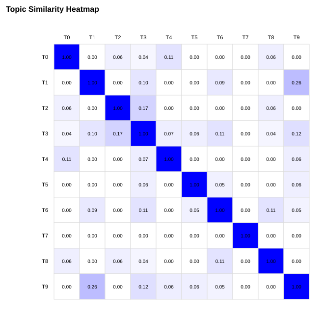
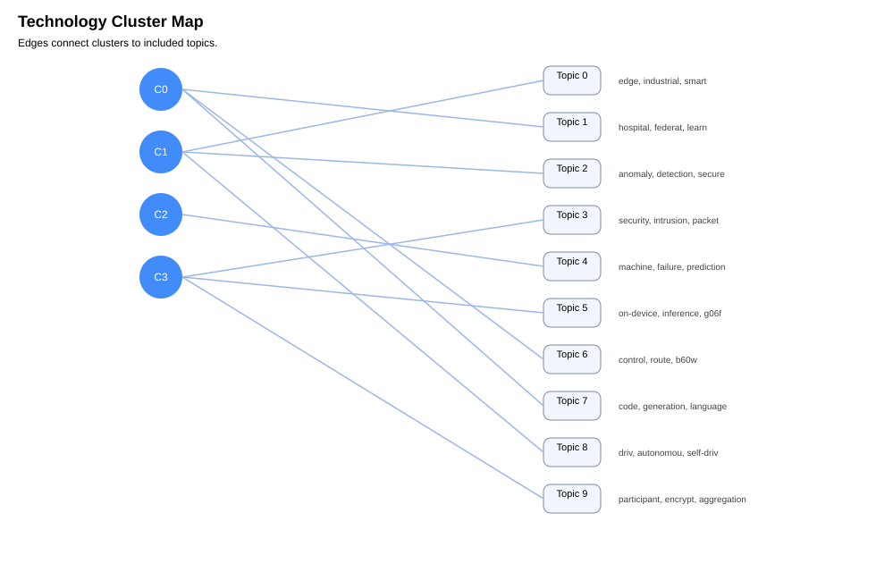

| 기술 토픽 | 대표 키워드 | 논문/특허 증가 추세 | 주요 응용 산업 |
|---|---|---|---|
| Topic 0 | edge, industrial, smart, camera, low-latency, factori, defect, automation | 판단 불가 | Manufacturing/Robotics |
| Topic 1 | hospital, federat, learn, medical, privacy, train, collaborative, diagnosi | 판단 불가 | Healthcare/Bio, Security |
| Topic 2 | anomaly, detection, secure, slic, virtualiz, infrastructur, cybersecurity, telecom | 판단 불가 | Telecom/Network, Security |
| Topic 3 | security, intrusion, packet, analytic, platform, telecom, learn, h04l | 판단 불가 | Telecom/Network, Security |
| Topic 4 | machine, failure, prediction, maintenance, factory, g05b, iot, predictive | 판단 불가 | Manufacturing/Robotics |
| Topic 5 | on-device, inference, g06f, compres, compression, mobile, g06n, detection | 판단 불가 | 범용 ICT |
| Topic 6 | control, route, b60w, vehicle, bas, plann, controller, reinforcement | 판단 불가 | Mobility/Automotive |
| Topic 7 | code, generation, language, large, transformer-bas, software, review, transformer | 판단 불가 | 범용 ICT |
| Topic 8 | driv, autonomou, self-driv, perception, multimodal, car, lidar, improv | 판단 불가 | Mobility/Automotive |
| Topic 9 | participant, encrypt, aggregation, optimization, gradient, federat, acros, privacy-preserv | 판단 불가 | Security |
| 기술 클러스터 | 포함 기술 토픽 | 대표 기술 | 주요 산업 |
|---|---|---|---|
| Cluster 0 | Topic 1, Topic 6, Topic 7 | hospital, federat, learn | Healthcare/Bio, Security; Mobility/Automotive; 범용 ICT |
| Cluster 1 | Topic 0, Topic 2, Topic 8 | edge, industrial, smart | Manufacturing/Robotics; Mobility/Automotive; Telecom/Network, Security |
| Cluster 2 | Topic 4 | machine, failure, prediction | Manufacturing/Robotics |
| Cluster 3 | Topic 3, Topic 5, Topic 9 | security, intrusion, packet | Security; Telecom/Network, Security; 범용 ICT |

